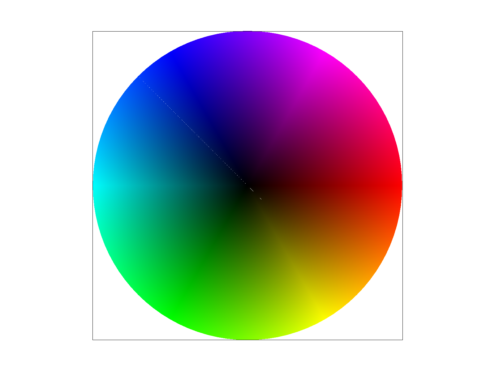

Overview
This homework explored the basic mechanism of graphics rasterization, transforms, and texture mapping by building a functional image parser that can render polygons with arbitrary shape and orientation, as well as map onto them custom textures/images.
The from-scratch implementation of rasterization really shows how the simple geometric logic of point sampling and line equation checks can be used to effincitly to render graphics on a grid of pixel. The most interesting takeaway from this homework is the internalization of graphics as simply a connected host of data structure of color values and coordinates, and how flexible that implementation is to operations like linear transformations and upgrades like supersampling to combat aliasing.
The biggest challenge of this project was to get used to C++ syntax and pointer logic again, but once that review is done, the implementation was quite straight-forward by simply following the mathematical frameworks introduced in lecture.
Section I: Rasterization
Part 1: Rasterizing single-color triangles
Triangles are rasterized by sampling a grid of points and testing each points using the line equation constructed from the triangles' vectices as described in lecture. If the sampled point is "above" all 3 edges of the triangle, that point is decidedly inside the triangle and can be filled with the triangle's color value.
To make sure our line equation tests are consistent, we need to establish a consistent winding order for the vertices. This is done by a quick line equation check before rasterization and reordering the vertices so that they are ordered in a clockwise direction.
Finally, to fill a pixel, one simply pass in the selcted fillcolor of the triangle into the framebuffer location associated with that pixel (as 3 float rgb values)
To make sure the line equation checks are efficient and to eliminate uncessary samples, for each triangle, only the pixels within its bonding box are sampled. That is the box bounded by (min_x(vertices), min_y(vertices)), (min_x(vertices), max_y(vertices)), (max_x(vertices), min_y(vertices)), (max_x(vertices), max_y(vertices)), which can be used to define the limits of the nested sampling loop.
Here is the screenshot of some test redering of svg files in the svg/basic folder with the pixel inspector centered on a the sharpest edge in test 4, showing signs of aliasing due to the fast changing signal.

|

|

|

|
Part 2: Antialiasing triangles
Supersampling is implemented by using an intermediary, higher-resolution sample buffer before rendering to the frame buffer. The sample buffer is sample_rate times larger than the frame buffer and stores sample_rate amount of values per frame pixel.
Let s be our sample rate. For each pixel location in the frame, the algorithm sample at s evenly spaced location within the pixel. This is implemented by a nested loop over sqrt(s) in each direction that dissect each pixel area into a sqrt(s) * sqrt(s) grid. The sampling method at each sub_grid location is the same as above, using line_equation checks and filling in the appropriate sample_buffer locations.
Here, each subgrid is also organized in the sample buffer in consecutive 1D arrays to make downsampling simpler. Before the values can be rendered to the (smaller) framebuffer, each subgrid need to be averaged into one color value per pixel. This is done by simply adding up each pixel's r, g, and b values in the subgrid and dividing by sample_rate.
What this algorithm does is essentially increasing the rate of point sampling so that it can better capture fast changing signals like sharp edges and corners. As seen in the pixel inspector printout below, the sharp edge in test4 is blurred when zoomed in, representing the sub_grid averaging that happens before rendering, and gives the impression of a cleaner line, with less jaggies.
|
|
|
|
|
|
Part 3: Transforms
Transforms are done by defining a set of 3x3 matrixes that can scale, rotate, and translate homogeneous coordinates in our 2D space. The construction of these matrices follow basic linear algebra intuitions discussed in lecture.
Below shows a rendering of a transformed image of the robot given for this task. Additional (hierachical) tranformation steps were added to the svg file to move the robots arms and head to give the impression of a waving gesture, with one arm on the hip and a tilted head.
Section II: Sampling
Part 4: Barycentric coordinates
Barycentric coordinates describe the position of a coordinate relative to a set of vertices (in this case, those of the triangle in which the point lies). It's a degenerate coordinate system that encodes how far the point is from each vertex, thus naturally serves as weights for averaging the pixel values of the vertexes, providing a smoother alternative to simply choosing the nearest vertex. This allows for linear interpolation across triangles and consequently rendering of gradients as seen in test7 below.
An additional triangle svg file was also generated to demonstrate the interpolation effect of using barycentric coordinates. The relative r, g, and b values at each location literally represents its relative distance to the red, green, and blue vertices, respectively
|
|

|
Part 5: "Pixel sampling" for texture mapping
Pixel sampling is done by mapping each pixel (x,y) location to a (u,v) coordinate in texture space. Because we need a smooth 1-to-1 mapping, the natural choice is to use the barycentric coordinates implemented in the last section to map each pixel location to the (weighted) average of the texel locations of its triangle's vertices.
Once the texture coordinate is calculated, we need to sample the texture image at that location and map its color value back to the sample buffer. The two choices for that are nearest pixel sampling and bilinear sampling.
In nearest pixel sampling, one simply rounds the float (u,v) coordinate to its closest interger texel locaiton and select that value for the mapping. When using bilinear sampling, one instead uses the same logic of barycentric coordinate to linearly interpolate between the nearst 4 texels, in this case, done with 3 lerp function calls. (2 calls to linearly interpolate in one direction and another to interpolate between those values to get interpolation in 2D)
|
|

|
|
|
|
In the above grid, one can see the anti-aliasing power of bilinear sampling compared to nearst sampling. In the fast-changing signals around the campanile's windows nearst sampling has a hard time mapping the fine details without artifacts like jaggies around edges. Bilinear interpolation helps reduce these effects even without using the more memory-intesive method of super sampling.
Just like supersampling, bilinear interpolation will show the most dramatic improvement over nearest sampling when there are very fast changing signals in the texture map.
Part 6: "Level sampling" with mipmaps for texture mapping
Section III: Art Competition
If you are not participating in the optional art competition, don't worry about this section!